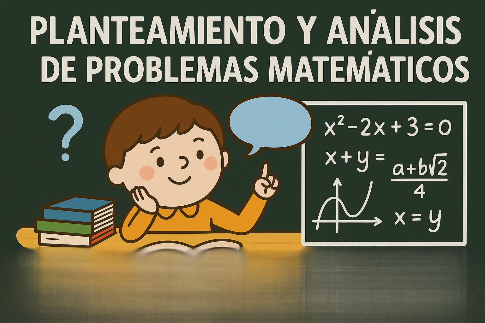
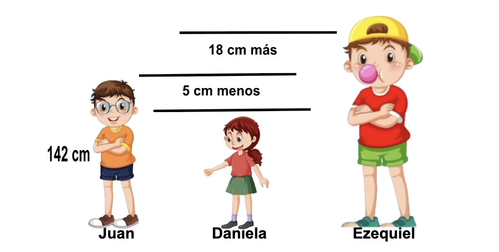
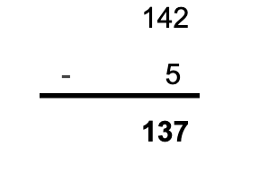
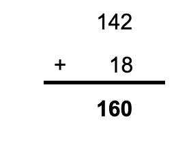

Planteamiento y análisis de problemas matemáticos
Planteamiento y análisis de problemas matemáticos


Concepto
El planteamiento de problemas es un proceso matemático complejo en el cual se construyen problemas a partir de la interpretación personal o significado que le da el estudiante a una situación concreta o a un problema previamente dado y este puede ocurrir antes, durante o después de la resolución de problemas.
EL planteamiento del problema describe una situación en cuestión que debe ser resuelto, es el punto de partida que da el enfoque y se obliga a centrarse en algo concreto. Para identificar el problema es necesario considerar el contexto, antecedentes, especificidad y relevancia de la investigación.
Ejemplo
Hola, hoy vamos a resolver un problema de matemática, vamos.
Juan mide 5 cm mas que Daniela y 18 cm menos que Ezequiel. Si la estatura de Juan 142 cm. ¿Cuánto miden Daniela y Ezequiel?
Análisis

Operación
Estatura: Daniela

Estatura: Ezequiel

Respuesta
- Daniela mide 137 cm
- Ezequiel mide 160 cm
Actividades
📌 Instrucciones para los estudiantes:
- Lee bien el problema.
- Subraya los datos importantes
- Identifica qué operación debes hacer primero, luego cuál es la siguiente.
- Resuelve paso a paso.
- Tu respuesta final con claridad.
Actividad 1
Esteban pesa 20 Kg menos que Kevin, 12 Kg más que Camilo. Si el peso de Esteban es de 58 Kg ¿Cuánto pesan Kevin y Camilo?
Actividad 2
La edad de Juan es numéricamente igual al cuadrado de la edad de Jesús, más 36 años. Si dentro de 3 años la edad de Juan será el cuadrado de la edad de Jesús, ¿cuántos años tiene Juan?
Creative Commons: Reconocimiento - compartir igual 4.0